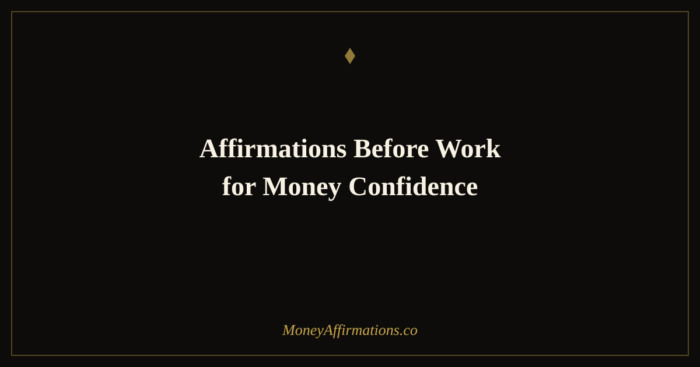

50 Affirmations Before Work for Money Confidence and Earning Energy

What you say to yourself in the hour before work shapes the entire day's earning potential more than most people realise. The mental state you walk in with — the stories you are telling about your value, your capability, and your financial worth — is the invisible architecture behind every negotiation, every client interaction, every moment someone decides whether to pay you more or less. Most people leave this to chance, starting their day in a reactive, anxiety-primed state because of a news alert, a traffic jam, or an unread email. These 50 affirmations are designed to replace that chance with intention. They are structured as a five-stage ritual that maps to your actual workday — from the moment you leave home through the end-of-day reset. Use the full sequence once, or dip into whichever stage fits your exact moment.
What are affirmations before work for money confidence?
Affirmations before work for money confidence are targeted mindset statements designed to prime your earning energy, professional self-worth, and financial confidence before you enter any work context. Unlike general morning affirmations, these are calibrated to the specific mental and emotional states that determine how you show up professionally — how confidently you advocate for your value, how calmly you handle financial conversations, and how clearly you communicate what you are worth.
The core idea is priming: deliberately activating specific neural networks before a situation so they are already warm when you need them. Athletes use this principle before competition. Surgeons use pre-procedure mental rehearsal. Executives use confidence rituals before major presentations. These affirmations bring the same principle into everyday working life — for anyone who wants to earn more, negotiate better, and show up with the kind of unshakeable money confidence that others can feel in a room.
50 affirmations before work for money confidence
Use this as a sequential ritual or dip into whichever stage fits your moment. Each group is designed to match a specific point in your working day.
Before you leave home — set your earning energy
- I am walking into today already knowing my value and owning it completely.
- I am carrying a calm, grounded confidence that nothing at work will shake today.
- I am someone whose presence, skills, and ideas generate real financial value.
- I am prepared, capable, and fully ready for everything this workday brings.
- I am entering today with earning energy — open to income, opportunity, and recognition.
- I am someone who is paid well because I deliver well, consistently and reliably.
- I am leaving behind any anxiety or scarcity thinking at the door — abundance travels with me today.
- I am the kind of professional people trust, respect, and want to work with.
- I am stepping into my full financial potential every time I show up to work.
- I am setting the tone for a productive, profitable, and confident day right now.
On your commute — prime your money mindset
- I am using this time to arrive mentally prepared, not just physically present.
- I am clearing my mind of yesterday's worries so today can be its own clean opportunity.
- I am arriving at work as the most confident version of myself.
- I am someone whose earning potential grows every time I invest in my mindset this way.
- I am transitioning from home to work with intention and financial focus.
- I am letting go of any comparison or envy and focusing on my own powerful path forward.
- I am arriving today ready to add value, claim value, and be compensated for that value.
- I am someone who earns more because I show up differently than most people do.
- I am grateful for the work I have and I am actively building toward more of what I want.
- I am primed for money confidence — every conversation, every decision, every opportunity today.
Before you sit at your desk — claim your value
- I am worth more than my current compensation and I am actively closing that gap.
- I am someone who delivers excellent work and I deserve to be paid excellently for it.
- I am comfortable claiming space, speaking up, and being seen in my professional environment.
- I am ready to do my best work and I know my best work is genuinely valuable.
- I am focused and energised — my full presence is a gift I bring to this role today.
- I am a professional with a specific and irreplaceable combination of skills and experience.
- I am stepping into my desk as a wealth creator, not just a wage earner.
- I am someone who advocates for fair pay because I know what I contribute.
- I am beginning this workday with clarity on what matters most and the confidence to pursue it.
- I am setting myself up for financial recognition by performing with excellence from the first moment.
Before a meeting, call, or pitch — activate confidence
- I am walking into this conversation knowing my worth and communicating it clearly.
- I am calm, grounded, and fully present — my confidence is visible and persuasive.
- I am someone who negotiates from a place of strength, not fear or desperation.
- I am prepared for every objection, question, and challenge this conversation may bring.
- I am a compelling communicator who makes the value I offer impossible to ignore.
- I am comfortable with silence in a negotiation because I know my position is strong.
- I am someone others want to say yes to because my energy and conviction are genuine.
- I am walking out of this meeting having moved my earning potential forward.
- I am worth every dollar I am asking for and I make that case effortlessly and honestly.
- I am confident, specific, and clear — and that combination gets results every time.
End-of-day reset — close with abundance
- I am proud of the value I added to my work and my financial life today.
- I am closing this workday knowing I showed up with full commitment and real impact.
- I am releasing the stress of today's challenges and keeping the lessons they brought.
- I am someone who grows more capable, more valuable, and more financially secure every working day.
- I am grateful for the income, the opportunities, and the growth this day represented.
- I am carrying the confidence I built today into tomorrow's earning opportunities.
- I am separating my self-worth from today's outcomes — I am enough regardless of results.
- I am building a career and financial life that reflects my true potential, one day at a time.
- I am ending today in abundance: richer in experience, skill, and financial momentum.
- I am ready for tomorrow to be even better — and I have already started preparing for it right now.
How to use these affirmations
The best way to use this ritual is to treat each stage as a standalone practice tied to a physical transition. The moment you pick up your keys is the trigger for the "Before you leave home" group. The moment you put in your earbuds for the commute is the trigger for the "On your commute" group. This kind of habit stacking — attaching the affirmation practice to an existing action — is the fastest way to make it automatic.
You do not need to use all five stages every day. On a normal day, the first two groups (home and commute) are enough to arrive in the right state. Pull out the "Before a meeting" group specifically on the days when you have a negotiation, a pay review, a client pitch, or a challenging conversation coming. The specificity is the point — these are not generic encouragements; they are precision tools for precise situations.
If your work involves a lot of sales or income-generating conversations, pairing this practice with affirmations for sales confidence gives you a complete professional confidence system — one that covers your entry state at the start of the day and your peak state right before the moment that matters most.
For the end-of-day reset, read those ten affirmations before you close your laptop or leave the building. The brain consolidates and encodes the day's experiences during sleep, and what you are thinking in the hour before bed influences that consolidation. Ending on abundance rather than anxiety means the emotional tone of today becomes the foundation for tomorrow.
The science of priming: why what you say before work shapes what you earn
In one of the most replicated findings in social psychology, John Bargh and colleagues demonstrated in 1996 that subtle environmental cues — words, images, contexts — automatically activate associated mental frameworks and physically alter subsequent behavior. Participants primed with words related to "professor" performed measurably better on a general knowledge quiz than those primed with words related to "soccer hooligan." This is the priming effect: what you expose your mind to immediately before a task shapes how you perform that task, completely outside conscious awareness.
Applied to work and money, this finding is significant. If you begin every workday reading negative news, rehearsing financial anxieties, or engaging with content that frames you as behind or not enough, you are priming a stress and scarcity mindset before you have done a single productive thing. Cortisol, the stress hormone, is particularly damaging here — elevated cortisol before work measurably degrades performance in the prefrontal cortex, which is precisely where your best decision-making, communication, and negotiation ability lives. A primed, calm, confident state protects that executive function.
Research on self-affirmation and negotiation adds another layer. A study by Shnabel et al. found that participants who completed a brief self-affirmation exercise before a negotiation secured significantly better outcomes than control groups. The mechanism appears to be reduced threat response: when you have already affirmed your core identity and value, you walk into the negotiation with less to prove and less to lose — the psychological state that produces the best agreements.
Finally, research on the morning routine and prefrontal cortex activation shows that deliberate, structured mental activity in the first hour of the day — as opposed to reactive consumption of messages and alerts — produces higher sustained focus and lower stress throughout the workday. Affirmation practice is among the most effective forms of this deliberate morning activation, because it is both cognitively and emotionally engaging.
Tips to make them work faster
- Anchor to a physical action: Choose a specific physical cue — putting on shoes, starting the car, making coffee — as the trigger for each stage. The physical-mental pairing makes the affirmation automatic within two to three weeks rather than requiring ongoing willpower.
- Say them out loud: The auditory reinforcement of hearing your own voice speak these statements engages a different neural pathway than reading silently. Even whispering them counts. Vocalization adds a layer of commitment that reading alone does not.
- Use the commute group as your most consistent practice: Of all the stages, the commute window is the most universally available and hardest to skip. If you can build only one affirmation habit, make it this group — five minutes during any transition from home to work context.
- Screenshot the meeting group: Save affirmations 31–40 to your phone's photo album. The moment you get a calendar invite for anything high-stakes — a salary review, a pitch, a difficult conversation — set a reminder to read that group ten minutes beforehand.
- Track the outcomes: Keep a simple log noting which work interactions felt more confident, more financially focused, or more productive on days when you used the affirmations versus days you did not. The pattern becomes visible within two to three weeks and provides concrete evidence that the practice is working — which dramatically increases motivation to continue.
Frequently asked questions
When exactly should I say affirmations before work?
The most effective window is within the first 30 minutes after waking — before you check your phone, read news, or engage with anything that could prime a stressed or reactive state. This is when the brain is transitioning from sleep and is most neuroplastic, meaning new thought patterns embed more easily. If mornings are chaotic, the commute window is an excellent second option — use the commute group specifically during that time for maximum contextual alignment between the content and the moment.
Can affirmations before work help me ask for a raise or promotion?
Yes — and the research supports this directly. Studies on self-affirmation (Cohen and Sherman, 2014) show that people who affirm their core values before high-stakes conversations are significantly less likely to become defensive or anxious, and more likely to communicate their value clearly and confidently. Before any negotiation, pay review, or conversation about advancement, use the "Before a meeting, call, or pitch" group specifically and read it two to three times. The confidence priming effect is measurable within minutes and has been shown to produce materially better negotiation outcomes.
How is this different from general morning affirmations?
General morning affirmations are broad — they cover gratitude, wellbeing, relationships, and life direction. Affirmations before work are specifically calibrated to earning energy, professional confidence, and money-generating behavior. They prime very specific neural circuits: the ones involved in risk tolerance, self-advocacy, perceived competence, and financial decision-making. If your goal is to feel more confident and capable specifically in your professional and financial life, work-specific affirmations are meaningfully more targeted and produce faster professional results than general morning practices alone.
Your earning power starts in your mind before it ever appears in your bank account. These 50 affirmations are a daily investment in the inner state that makes outer success possible. For the full library of money and career confidence affirmations, explore the money affirmations collection — it is the most comprehensive resource on the site for building the financial identity that supports real, lasting income growth.